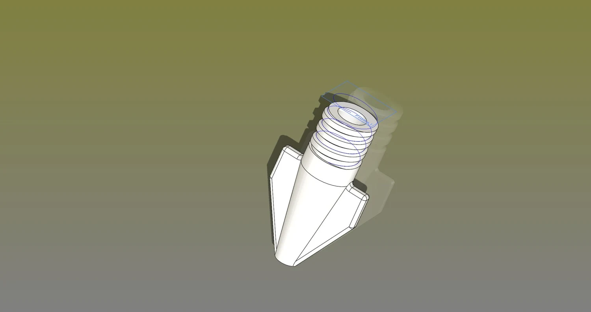

Start with the physical part.
For this medical-device development project, I modeled two existing valve components from a Fogarty catheter in CAD. The task was to understand and represent an existing device; these are reverse-engineered components, not a newly fabricated prototype.



Follow the device through its use.
I created the use FMEA and contributed to the process and design FMEAs. The use analysis followed six tasks from the instructions for use and identified 22 failure modes, including nine rated unacceptable before mitigation.
The analysis covered hazards such as air embolism, vessel injury, component separation, and excessive withdrawal force. Linking each hazard to a use step made the risk assessment specific to how the device is handled.
CAD and risk documentation.
This semester project connected physical geometry with use-related risk and design-control documentation. My direct contributions were the two valve models and use FMEA, with collaborative work on the other risk analyses.
Source: my CAD renders, use FMEA, and BMED 4823 project documentation.